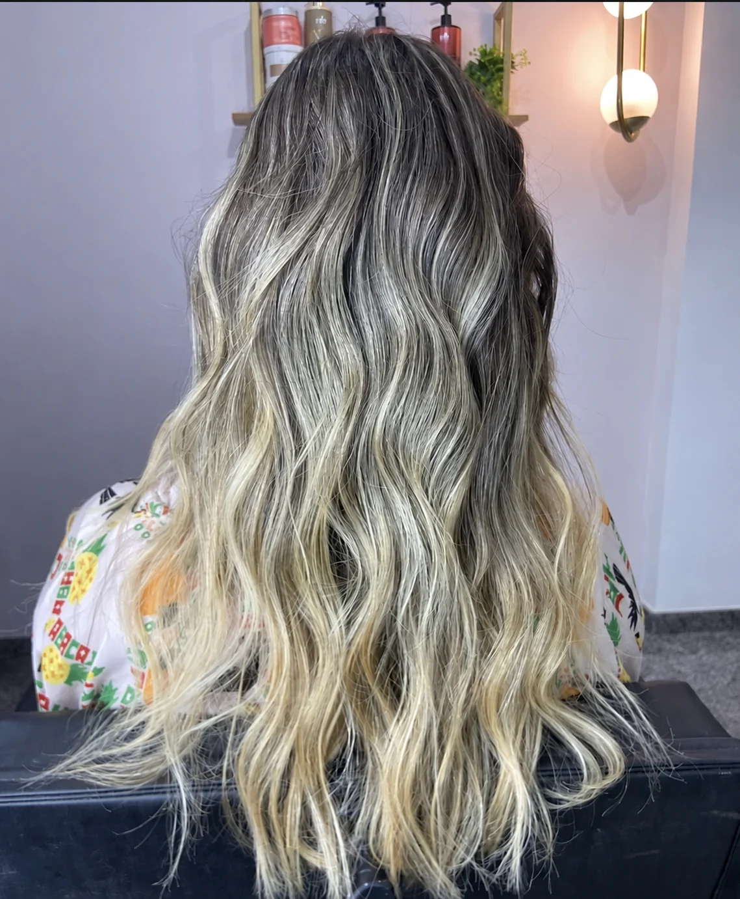

Mechas
Iluminação e tons personalizados para valorizar seus traços e seu estilo.
Mechas, cachos e alinhamento pensados para realçar o que há de único em você.
Cada cabelo conta uma história. Aqui, a transformação começa com uma conversa sobre o que você deseja e termina com um resultado que combina com você.
Do loiro iluminado ao cuidado dos cachos, Anne valoriza a beleza de cada cliente com atenção aos detalhes.

Escolha o cuidado que faz sentido para o seu cabelo. Para valores e disponibilidade, fale diretamente com o studio.
Iluminação e tons personalizados para valorizar seus traços e seu estilo.
Um olhar dedicado à textura, ao movimento e à beleza natural dos cachos.
Cuidado para quem busca fios alinhados, com acabamento elegante.
Fotos e vídeos de trabalhos compartilhados pelo Studio Anne Linhares. Toque para explorar cada resultado.
Explore três caminhos para o seu próximo visual. Escolha o que mais combina com você e comece uma conversa com o studio.
Um loiro iluminado que valoriza o rosto e traz leveza ao visual.
“Seu cabelo merece um cuidado que faça você se reconhecer ainda mais bonita.”Studio Anne Linhares
Conte o que você deseja para o seu cabelo e consulte os horários disponíveis diretamente com o studio.
Conversar no WhatsApp